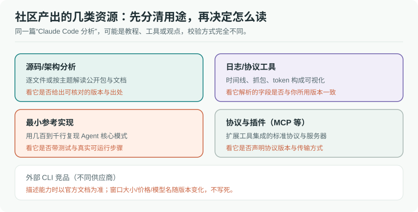
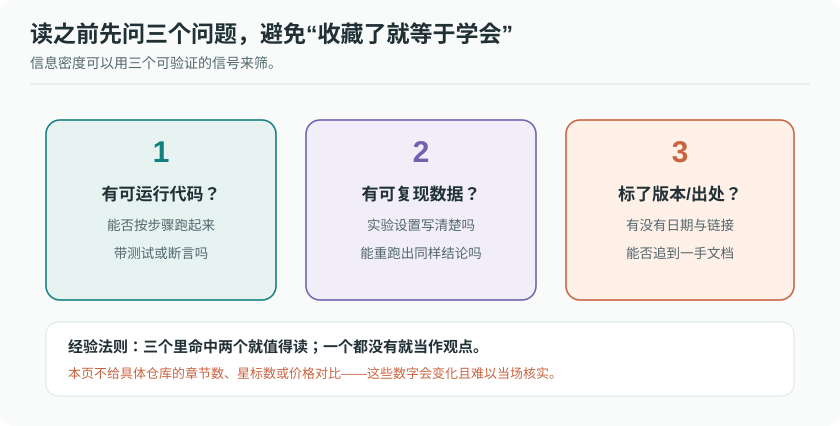

社区生态与工具：如何筛选可信资源
不提供会过期的“资源清单”，而是教你分辨产出类型、用三道可验证问题筛选、规划路径并跟踪一手信息。
生态很大，但可信度参差
围绕 Coding Agent，社区产出增长极快：源码分析、可视化工具、最小实现、协议插件、竞品 CLI——名目繁多。但要小心两类陷阱：一是把会过期的数字当成常识（章节数、星标数、价格倍率），二是把观点当成事实。本章的目标不是给你一份会过时的清单，而是给你一套能自己复用的筛选方法。
先声明证据口径：本章对第三方项目的描述仅限公开可检索且可当场核对的内容；任何随版本变化的具体数字都不在本章断言。
先分辨你读的是哪一类产出
同样的“Claude Code 分析”，可能是教程、工具或观点，校验方式完全不同：

阅读时的一个好习惯：区分作者在写可观察行为（“我看到这个请求带了这些字段”）还是在写推断（“我认为内部是这样实现的”）。前者可以对照你自己的日志，后者需要保留怀疑。
用三道可验证问题筛选
面对一篇资源，先问三个问题；三个里命中两个就值得投入时间，一个都没有就当作观点：

对日志与协议工具这类工具，额外看一点：它解析的字段是否与你当前使用的版本一致。任何抓包工具都以某个版本的通信格式为前提，版本一变就可能误读。
与同类 Agent 工具怎么比
市面上有多家供应商的 coding agent CLI 与 IDE 插件。比较时建议只看不随版本变化的结构性差异，而不是会变的窗口大小或价格：
| 比较维度 | 看什么 | 为什么重要 |
|---|---|---|
| 扩展机制 | 是否支持标准协议（如 MCP）、自定义工具与子代理 | 决定能否接入你自己的工具链 |
| 权限与沙箱 | 是否默认向用户确认副作用、是否 OS 级隔离 | 决定自主运行时的事故半径（见第 15、17 章） |
| 可观测性 | 是否暴露 usage、停止原因与日志 | 决定你能否调试与做成本归因 |
| 开放程度 | 开源/可自托管/插件生态 | 决定长期可控性与迁移成本 |
至于“哪家更强”的结论，请始终回到你自己的任务集上自己测，而不是相信任一方的宣传指标。
三条学习路径
按目标选路径，每条都以“做完一个可验证的产物”为终点：
- 想搞懂原理：先读一份带源码引用的分析，再对照公开包与官方文档验证结论，最后用自己的日志核对一条具体行为。
- 想自己造：先跑通本课程第 3–9 章的 Agent 核心，再参考一个带测试的最小实现，最后用官方 Agent SDK 重构并补上测试。
- 想做贡献：先读 MCP 规范并写一个最小 MCP Server，再向一个你常用的开源工具提一个可复现的小 PR。
“教程收集症”的解药
收藏不等于学会。有效路径是：选定一个资源 → 跟着做一遍 → 自己改一点东西 → 把改动发出去让人评论。只有最后一步会真正暴露你的理解缺口。
持续跟踪一手信息
这个领域三个月就换一批名词。与其追二手解读，不如固定几个一手信息源：官方文档的 changelog、官方工程博客、以及你所依赖 SDK/包的 release notes。对 MCP 这类标准化协议，尤其要盯版本号变化（见第 18、19 章的协议分代）。
一个实用习惯：把“我看到的行为”按版本 + 日期 + 出处记在自己的实验日志里（见第 2 章）。半年后你再回来看，这份日志比任何教程都可靠。
练习：写一份资源评估
官方资料与证据口径
- Claude Code: Overview — 能力与扩展方式的一手描述
- Anthropic: Tool Use overview — 工具循环与协议基础
- Claude Code: MCP — 外部工具集成的官方说明
- Model Context Protocol — 协议规范与版本变更的一手来源
图 1、图 2 为教学示意。本章不列具体第三方项目的章节数、星标数或价格对比，因为这些数字会变化且难以当场核实；引用外部资源时请回到其自身文档核对版本与日期。